| DIOSES |
DEFINICIÓN |
FOTO |
| ZEUS |
Además de ser el Dios del Rayo, Zeus también es padre supremo de todas
las deidades y los mortales que habitan la tierra. Es originario de la isla de Creta, donde al
nacer fue rescatado de las fauces de su padre, Cronos.
De no haber sido por la oportuna intervención de Rea (su madre), Zeus habría sido devorado por
su progenitor, al igual que el resto de sus hermanos.
Rea escondió y crió a Zeus hasta que este se convirtió en el máximo referente de los Dioses
griegos. Sin embargo, hay que tener en cuenta que a pesar de ser el principal dios griego,
estaba mucho más humanizado que el Dios judeocristiano, e incluso fue descrito como un
oportunista y una entidad dada al engaño (sobre todo adoptando la forma de otros seres). |
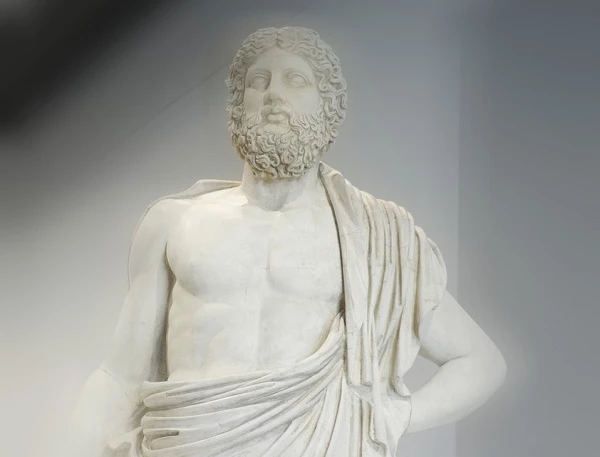 |
| POSEIDÓN |
Este dios tiene el poder de controlar la furia de las aguas, aparte de
ocasionar terremotos a placer. Es oriundo de la ciudad de Rodas, donde fue criado por los
Telquines (criaturas híbridas marino-terrestres). |
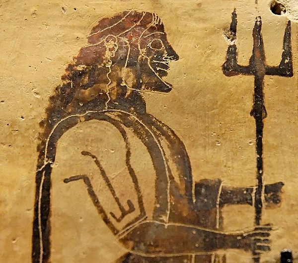 |
| HADES |
Hades era el mayor de los hijos varones del titán Cronos. Fue devorado
por su padre, aunque luego sería rescatado de la muerte por Zeus. Uniendo fuerzas con sus
hermanos, Zeus y Poseidón, lograron derrotar a Cronos.
Juntos se adueñan del universo y lo reparten entre sí, a Hades le fue conferido el inframundo,
quedando relegado a una terrible soledad, la cual lo llevó a tomar en cautiverio a la doncella
Perséfone (hija de Zeus), para obligarla a contraer matrimonio con él.
Suele asociarse con la maldad, pero Hades puede ser visto como un dios noble que siempre, por
confuso que pareciera, buscaba mantener en el mundo un equilibrio adecuado entre el bien y el
mal. |
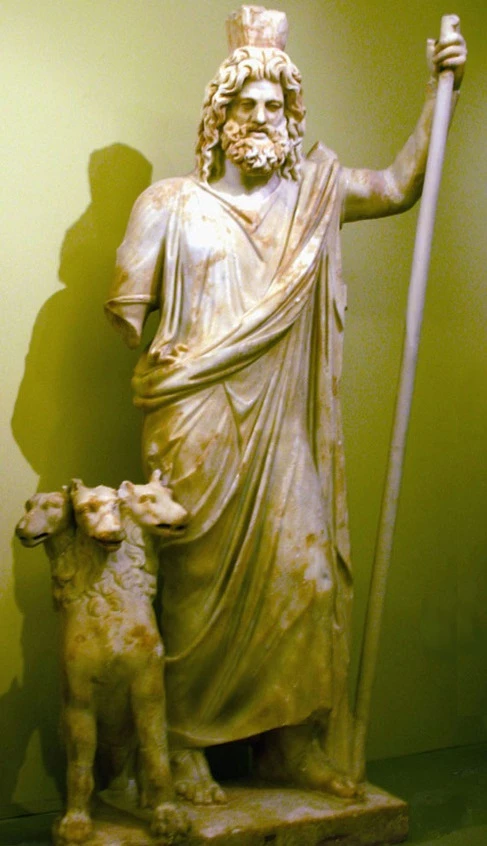 |
| HERMES |
Hermes es hijo del Dios Zeus, por su elocuencia y carisma se ganó el
título de protector de ladrones y Dios de las fronteras. Nacido en el Olimpo, al igual que su
padre tuvo relaciones informales con un gran número de mujeres, dejando así, una vasta
descendencia. Su mayor hazaña es la de haber ido al inframundo, por encargo de Zeus, a negociar
con su tío (el mismísimo Hades), para que éste dejase en libertad a su hermana Perséfone, lo
cual consiguió gracias a su divina retórica. |
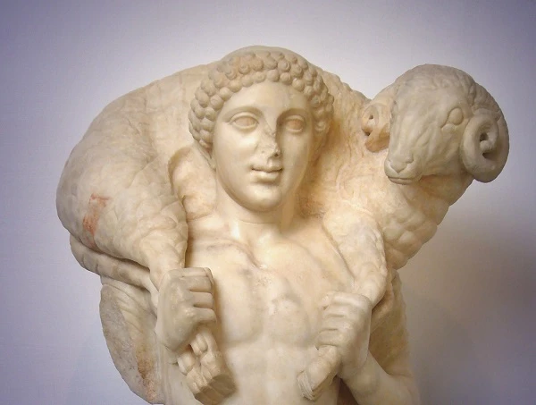 |
| HERA |
Esta diosa era la hermana mayor del todopoderoso Zeus, y al mismo
tiempo su esposa. Se le atribuye la responsabilidad de velar por las uniones matrimoniales y los
nacimientos, además de brindarles especial resguardo a todas las mujeres.
Siempre fue de personalidad noble y muy humana, a pesar de su divinidad. En honor a la Diosa
Hera se celebran fiestas llamadas “Matronalia”, las cuales se llevan a cabo el primero del mes
de marzo. |
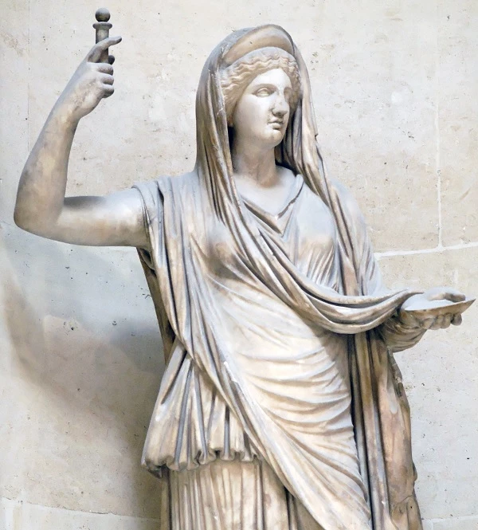 |
| HEFESTO |
Los artesanos tenían a su protector, Hefesto. El Dios del fuego y los
trabajos de forja. Es hijo de la Diosa Hera y el todopoderoso Zeus, aunque esto no se tiene
demasiado claro. Hay versiones donde se indican que solo es hijo de Hera. Hefesto, a excepción
del resto de las deidades nació sin belleza física, su apariencia era tan desagradable al nacer
que su madre lo arrojó del Olimpo, y quedó cojo luego de la caída.
Fue rescatado del mar por la Diosa Tetis (madre de Aquiles) y criado por esta en la isla de
Lemons. |
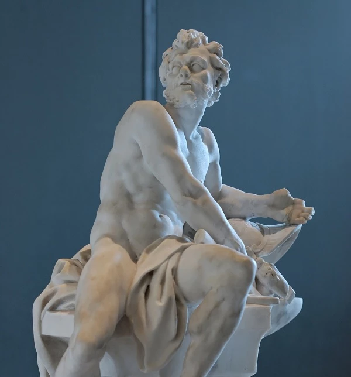 |
| DIONISO |
En el sentido estricto de la palabra, Dioniso resulta ser un semidiós.
Nacido de Zeus con una mortal llamada Sémele, este dios griego también es conocido como el
soberano de la agricultura.
La leyenda de Dioniso cuenta que este nació dos veces, la primera de forma mortal y la segunda
gracias a la divinidad de su padre.
En una ocasión Zeus adoptó su verdadera forma, y los rayos que cayeron dieron muerte a Sémele y
Dioniso. El todopoderoso dios tomó al niño, y colocándolo en uno de sus muslos le devolvió la
Vida. |
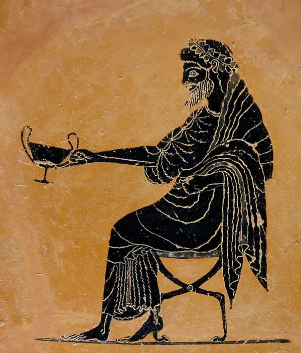 |
| ATENEA |
Es una de las principales y más influyentes Diosas del Olimpo. Los
relatos cuentan que nace directamente de la cabeza de Zeus, una vez que este se tragara a su
madre, Atenea surgió con la ayuda de Hefesto, quien abrió la cabeza de Zeus; de ahí sus
grandiosas habilidades para las ciencias y la estrategia, dotes que le servían también en el
campo de batalla, donde era una guerrera implacable.
La Diosa Atenea, en contraparte a su hermano Ares, representa las causas justas. |
 |
| APOLO |
En los relatos de la mitología griega, el dios Apolo representa la
perfección y la belleza. De los hijos de Zeus, Apolo fue el más influyente de todos ellos. No
solo era el Dios del Sol, sino también de las enfermedades y la sanación, de las plagas y de
los antídotos contra ellas. Este dios es el equilibrio perfecto entre lo saludable y lo
insano. Apolo jugó un papel trascendental durante la Guerra de Troya, cuando el Rey de esta
ciudad negara a los Dioses las ofrendas prometidas, fue él quien liberó una peste mortal sobre
Troya.
Pero su más grande hazaña, sin duda alguna, es haber dirigido la flecha del Príncipe Paris hacia
el talón de Aquiles, causándole la muerte. |
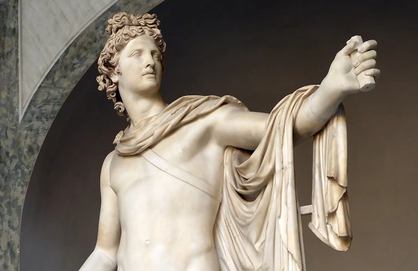 |
| ARTEMISA |
Artemisa es la hermana melliza de Apolo. Esta diosa representa alivio
para las mujeres durante el parto. Al igual que su hermano Apolo son repudiados por la diosa
Hera, ya que ambos provienen de la infidelidad de Zeus.
De niña, entre otros antojos, le pidió a su padre que le concediera el regalo de la virginidad
eterna, lo cual le fue cumplido. Por tal motivo, Artemisa es una Diosa sin ningún tipo de deseo
sexual. |
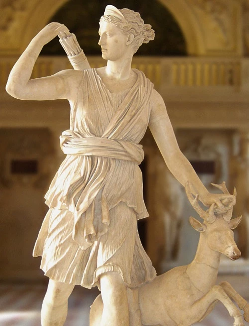 |
| ARES |
Ares es la contraparte de su hermana, la diosa Atenea. Esta diosa
representa el instinto más puro y visceral de la guerra, es la violencia en su máxima expresión.
Es fundador de la ciudad de Tebas, donde habitan los espartanos.
A pesar de ser el Dios de la guerra, Ares fue derrotado en varias ocasiones por su hermana
Atenea. También es conocida la anécdota de cuando fue herido por el héroe Diomedes y tuvo que
regresar al Olimpo para sanar, dejando a los troyanos sin su ayuda durante la guerra. |
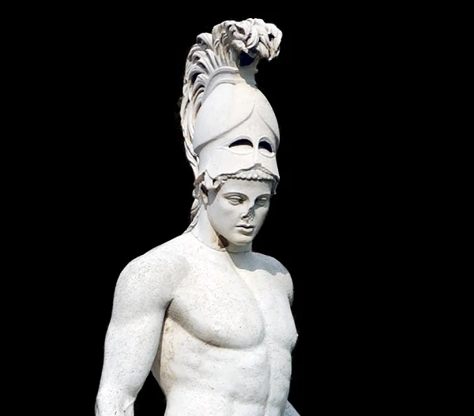 |
| AFRODITA |
Lujuriosa y llena de pasión. Esta diosa gobierna sobre todo lo
relacionado al sexo y la reproducción. Emerge del mar directamente como
adulta, siendo deseada por muchos hombres desde el primer momento.
Por temor de un conflicto en el Olimpo, Zeus decide que sea Hefesto quien se queda con Afrodita,
pero la Diosa nunca deseó estar con él, y sería Ares quien calmara los intensos deseos sexuales
de Afrodita. |
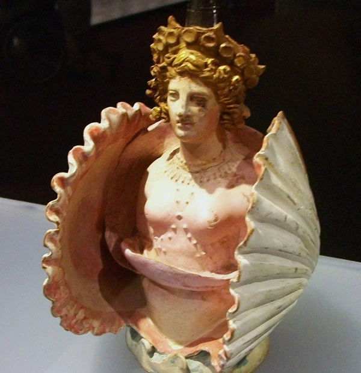 |